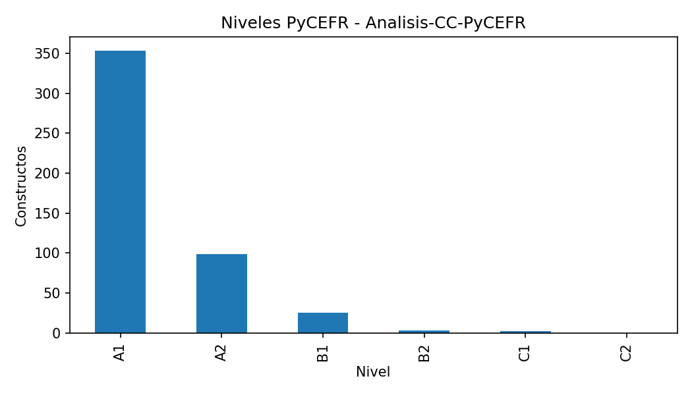
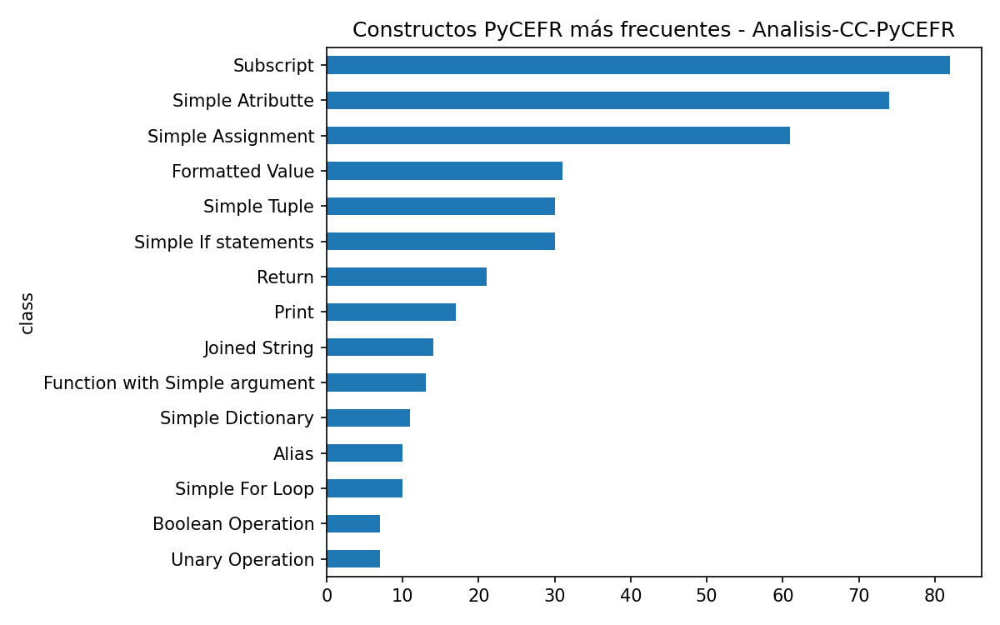
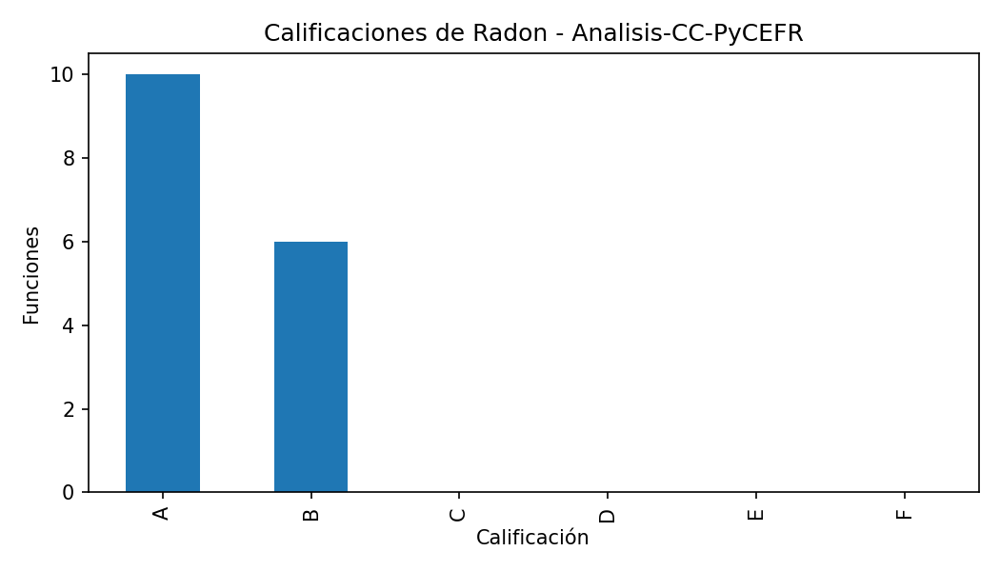
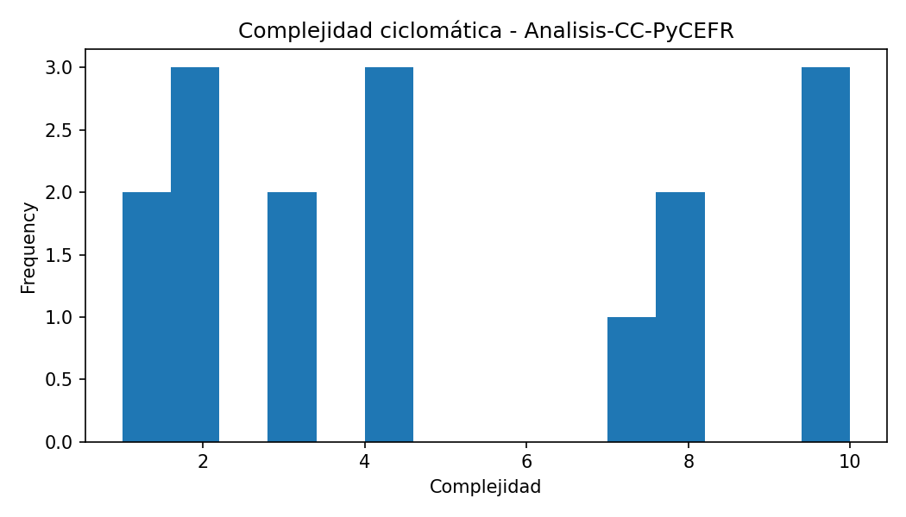
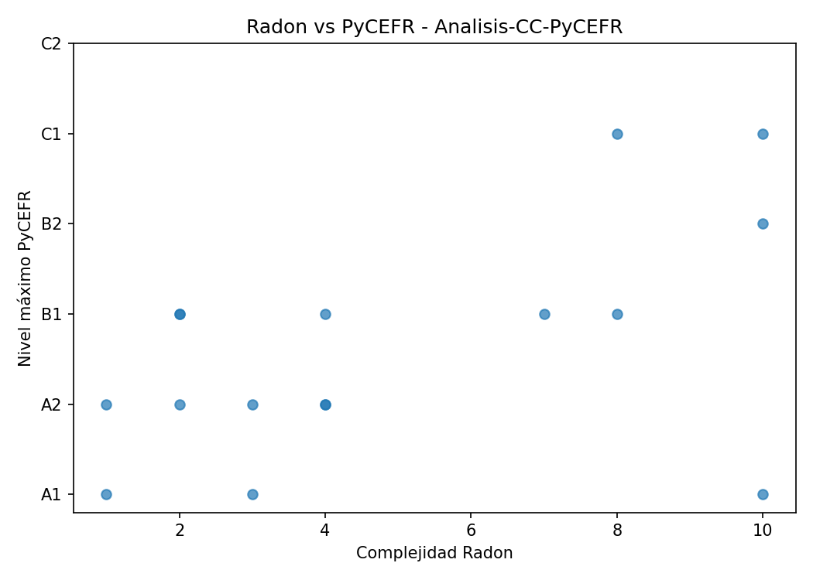

Constructos PyCEFR detectados: 482
Clases PyCEFR distintas: 39
Nivel máximo PyCEFR: C1
Funciones Radon detectadas: 16
Complejidad máxima Radon: 10.0
Calificación máxima de Radon: B
Casos interesantes detectados: 4
Este caso contiene funciones donde las herramientas muestran patrones de coincidencia o discrepancia. Estos ejemplos son candidatos para comentarse en la memoria.
| class | count |
|---|---|
| Subscript | 82 |
| Simple Atributte | 74 |
| Simple Assignment | 61 |
| Formatted Value | 31 |
| Simple If statements | 30 |
| Simple Tuple | 30 |
| Return | 21 |
| 17 | |
| Joined String | 14 |
| Function with Simple argument | 13 |
| file_name | name | complexity | radon_grade | lineno | endline |
|---|---|---|---|---|---|
| generator.py | walk | 10 | B | 228 | 245 |
| generator.py | extract_records | 10 | B | 206 | 248 |
| generator.py | print_report | 10 | B | 328 | 370 |
| generator.py | read_json | 8 | B | 66 | 157 |
| generator.py | normalize_record | 8 | B | 182 | 202 |
| generator.py | compare | 7 | B | 269 | 324 |
| main.py | get_folder_name | 4 | A | 7 | 21 |
| main.py | choose_option | 4 | A | 32 | 46 |
| generator.py | as_number | 4 | A | 160 | 168 |
| generator.py | pick_first | 3 | A | 171 | 175 |
| file_name | function | complexity | radon_grade | max_level | n_pycefr_constructs | case_type |
|---|---|---|---|---|---|---|
| generator.py | extract_records | 10 | B | C1 | 50 | Coincidencia en dificultad alta |
| generator.py | walk | 10 | B | B2 | 18 | Coincidencia en dificultad alta |
| generator.py | print_report | 10 | B | A1 | 104 | Radon alto / PyCEFR bajo; Muchos constructos simples acumulados |
| generator.py | read_json | 8 | B | C1 | 47 | Coincidencia en dificultad alta |





Este informe se genera automáticamente. Las conclusiones finales deben revisarse manualmente para comprobar que los ejemplos seleccionados son representativos y adecuados para la memoria.